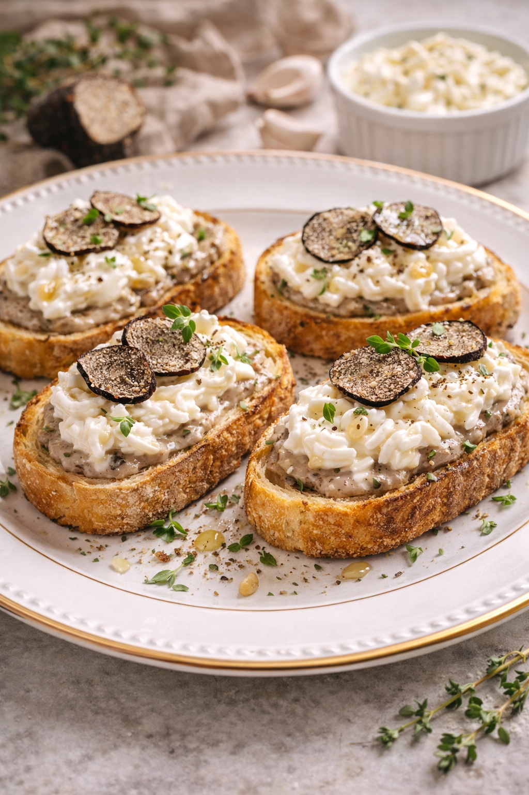
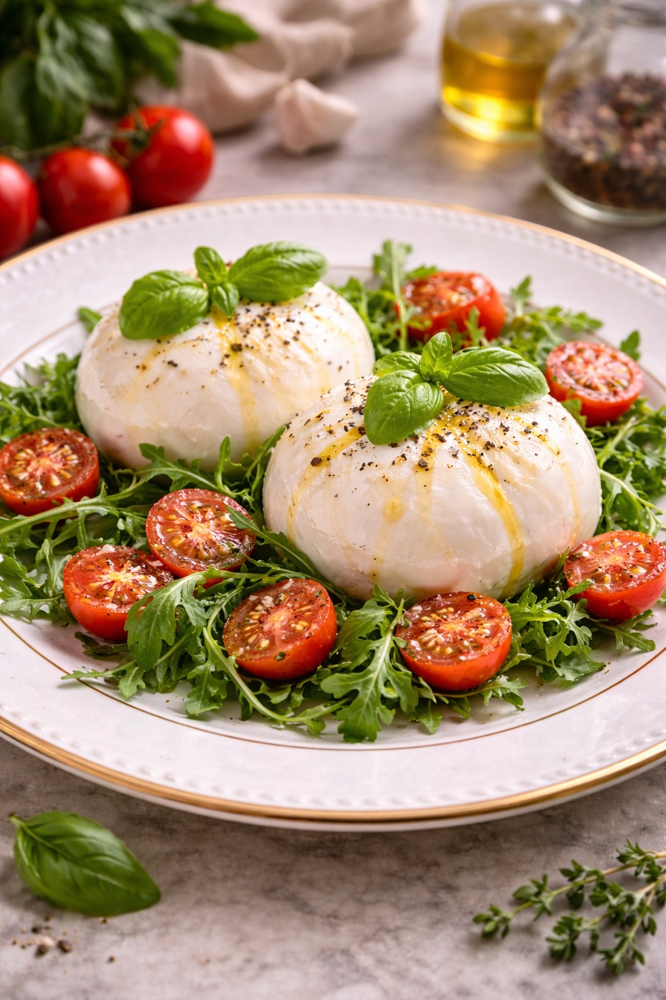
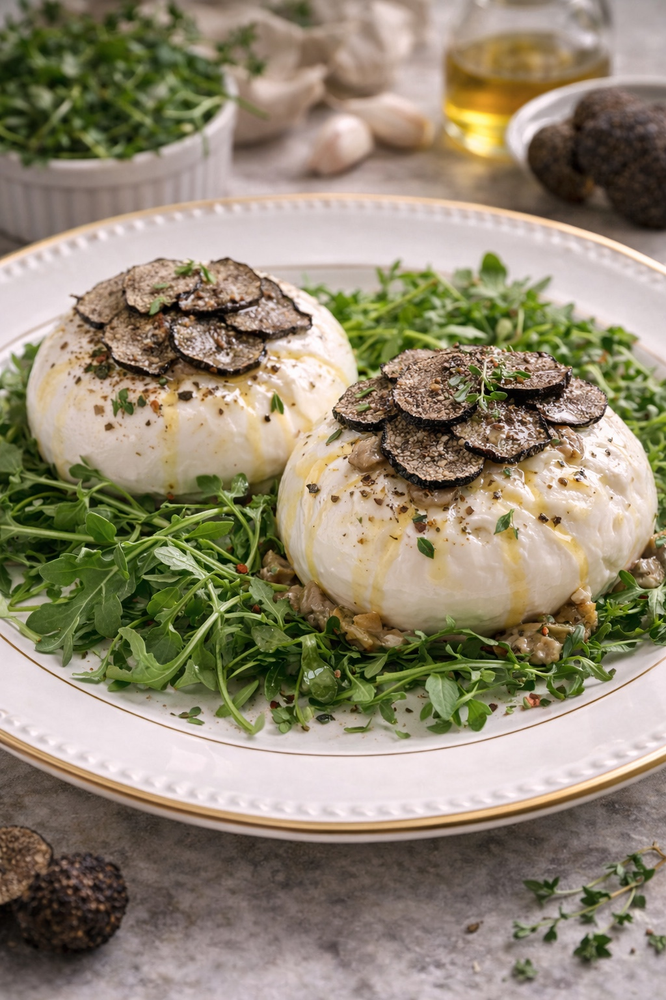
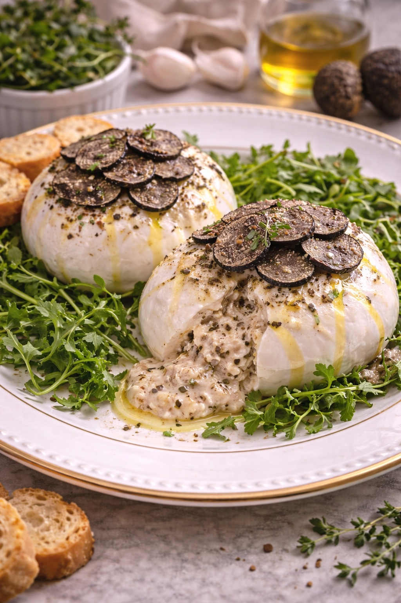
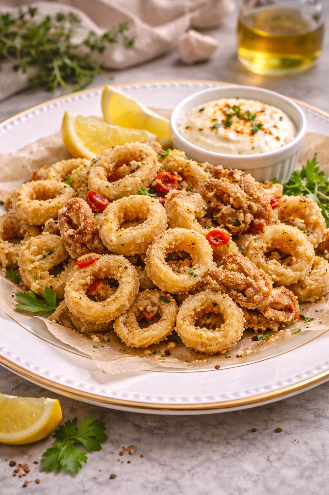

ANTIPASTI

MOZZA STICK
Mozzarella panée servie avec sauce maison

BRUSCHETTA ITALIANA
Pain grillé, ail, huile d'olive, tomates et basilic

BRUSCHETTA CAPRA
Pain grillé, tomates et fromage de chèvre frais

BRUSCHETTA TRUFFE
Crème de truffe et mozzarella

BURRATA CLASSICA
Burrata accompagnée de tomates cerises

BURRATA AL TARTUFO
Burrata et copeaux de truffe fraîche

BURRATA AL FORNO
Burrata rôtie au four, jambon cru (prosciutto), herbes et huile de truffe

PIZZETTE MIX
Assortiment de petites pizzas maison

CALAMARI FRITTI
Calamars frits avec sauce Romaine